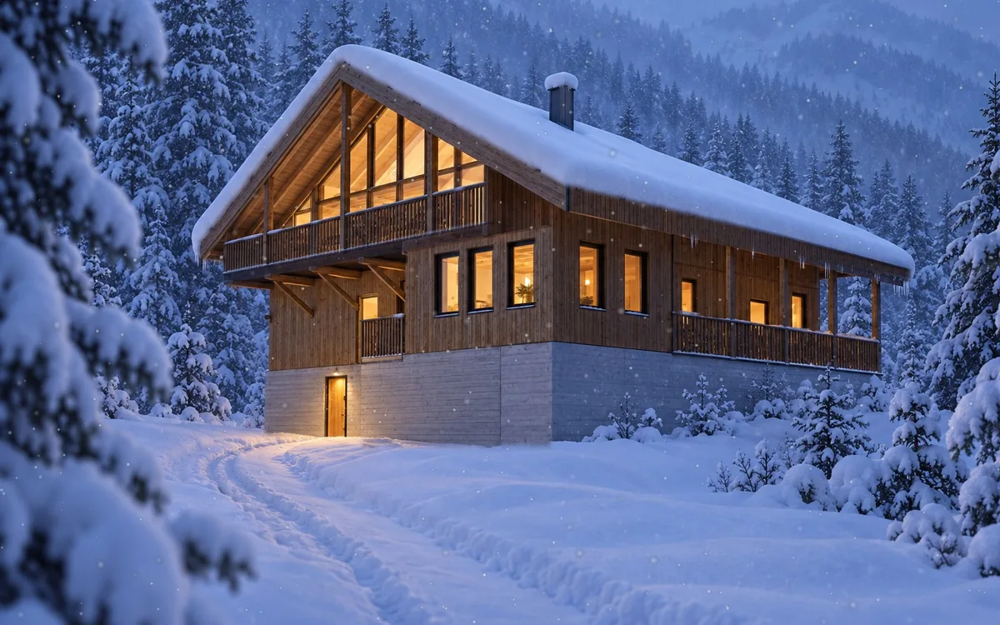
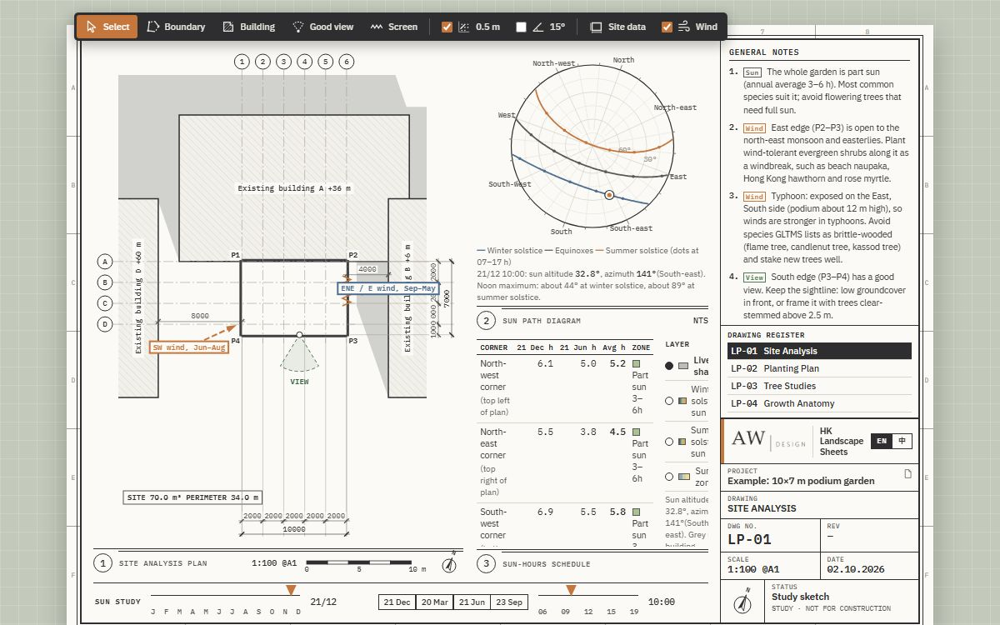
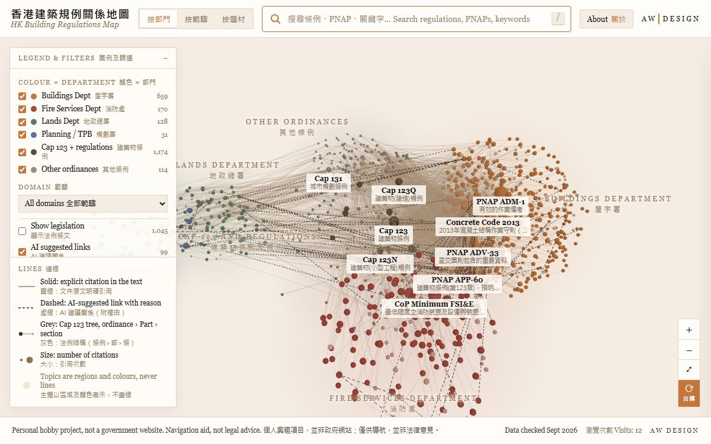

Anzon WongAnzon Wong
Architect in the United Kingdom, from Hong Kong. I design buildings, make small tools and AI agents for architects, and teach people to build agents of their own.
來自香港、現居英國的建築師。我設計建築，為建築師製作小工具及 AI 代理人，亦教人建立屬於自己的代理人。

Snow Chalet雪山木屋
An interior study for a mountain chalet with the living space under the roof: SketchUp views set against AI renders, plans of all three levels and a short narrated walkthrough.
山間度假木屋的室內研究，起居空間設於坡屋頂之下：SketchUp 視圖對照 AI 效果圖、三層平面，並附簡短旁白導覽。

The Upside-Down Chalet倒置木屋
A chalet conversion with the bedrooms below and the living space under the roof. Walk through it in 3D and compare the original drawings with AI renders.
木屋改建項目：睡房在下，起居空間在屋頂之下。可於立體模型中漫遊，並以原有圖則對照 AI 效果圖。

CocotteCocotte 法式小館
A small French bistro in Hong Kong, my own interior design from 2013, revisited as a working 3D model with the options, materials and drawings behind it.
2013 年由本人設計的香港法式小館。以可操作的立體模型重溫方案，並展示設計選項、物料及背後的圖則。
Free tools made in my own time, about regulations and early design.
業餘時間製作的免費工具，關於建築規例及早期設計。

HK Landscape Sheets香港園境圖則
Draw a podium garden and get a set of A1 landscape sheets: site analysis, planting plan, tree schedule and growth studies.
繪畫一個平台花園，即可得到一套 A1 園境圖則：地盤分析、種植平面、樹種表及生長研究。
Personal hobby project, first version. Not official guidance and not legal or professional advice.
個人興趣作品（第一版），並非官方指引，亦非法律或專業意見。

HK Building Regulations Map香港建築規例關係地圖
A 3D bilingual map of Hong Kong building control documents and the links between them: ordinance, regulations, practice notes, codes and guidance.
以立體雙語地圖展示香港建築管制文件及其相互關係：條例、規例、作業備考、守則及指引。
Personal hobby project, not a government website. Navigation aid, not legal advice.
個人興趣項目，並非政府網站；僅供導航，並非法律意見。
Build your own AI agent建立你自己的 AI 代理人
Five one-to-one lessons online. Start from a working agent, see how it works, then reshape it around your own work.
五堂一對一網上課。由一個現成的代理人開始，了解它如何運作，再按你自己的工作把它改造。